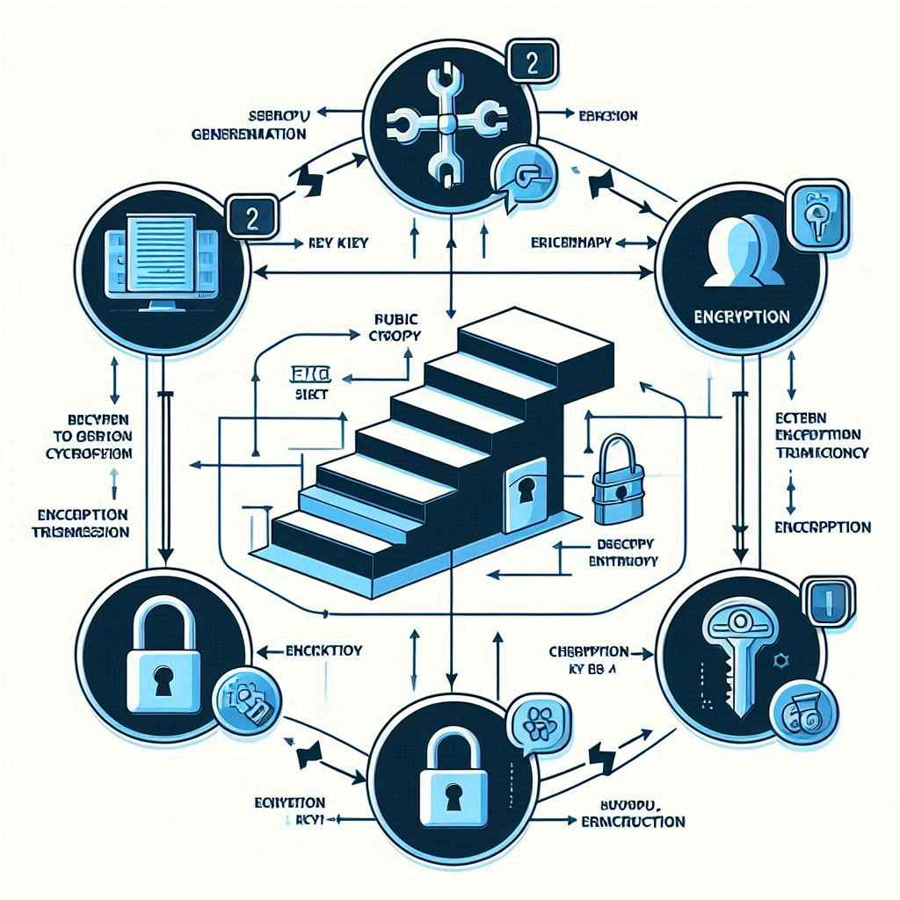

El criptosistema de clave pública permite cifrar y descifrar mensajes sin compartir una clave secreta previamente.
¿Cómo funciona y cuáles son sus algoritmos representativos?
El funcionamiento de un criptosistema de clave pública se basa en el uso de claves matemáticamente relacionadas, donde la clave pública cifra el mensaje y la clave privada lo descifra. Este método mejora la seguridad en la comunicación y se aplica en firma digital, autenticación y protección de datos.
Funcionamiento del Criptosistema de Clave Pública
El funcionamiento de un criptosistema de clave pública se basa en el uso de funciones matemáticas complejas, como la factorización de números primos o las curvas elípticas.
Pasos básicos:
Generación de claves:
Se crean un par de claves, la pública y la privada, mediante algoritmos como RSA o ECC (Elliptic Curve Cryptography).
Cifrado:
El emisor cifra el mensaje utilizando la clave pública del receptor.
Transmisión:
El mensaje cifrado se envía al destinatario.
Descifrado:
El receptor utiliza su clave privada para descifrar el mensaje.
Este proceso permite garantizar la confidencialidad de la comunicación sin necesidad de compartir previamente una clave secreta.

Algoritmos Representativos
Algunos de los algoritmos más utilizados en criptografía de clave pública son:
RSA (Rivest-Shamir-Adleman):
Basado en la dificultad de factorizar grandes números primos.
DSA (Digital Signature Algorithm):
Utilizado para la autenticación y firma digital.
ElGamal:
Basado en logaritmos discretos y utilizado en cifrado y firma digital.
ECDSA (Elliptic Curve Digital Signature Algorithm):
Utiliza curvas elípticas para
proporcionar seguridad con claves más pequeñas.
Referencias
- Hernández, L. (2016). Criptografía de clave asimétrica. En: La criptografía (pp. 93-134). Editorial CSIC Consejo Superior de Investigaciones Científicas.
- Maillo, J. (2017). Seguridad de la información. En: Sistemas seguros de acceso y transmisión de datos (pp. 76-102). RA-MA Editorial.
- Conklin, L. (s. f.). Threat modeling process. OWASP.